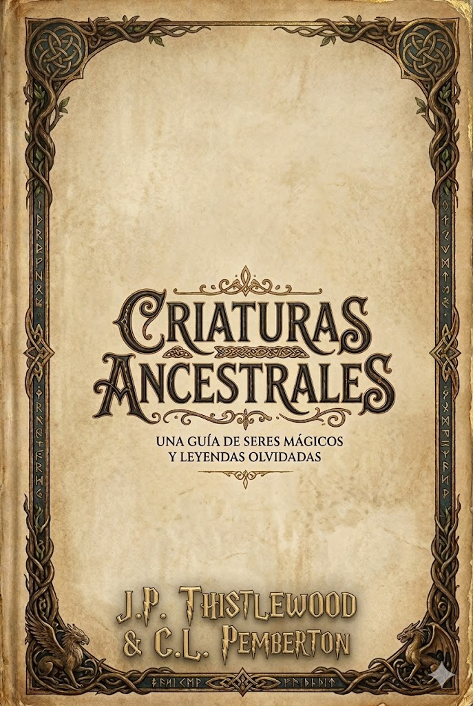
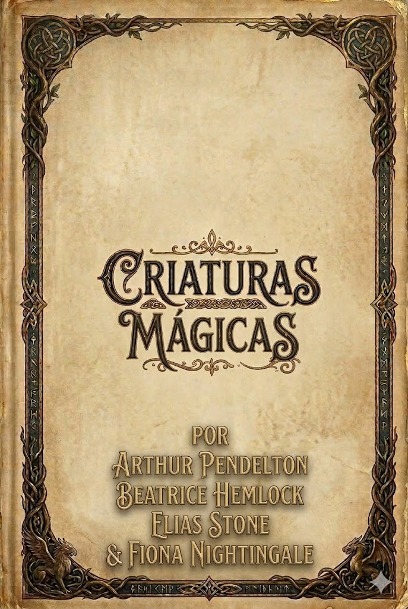
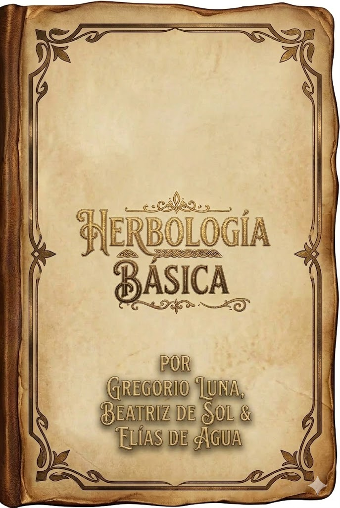
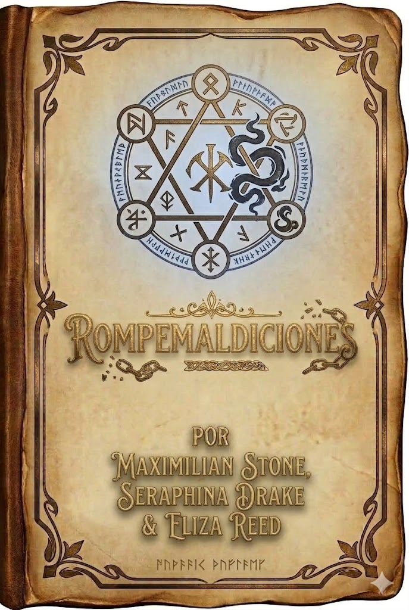
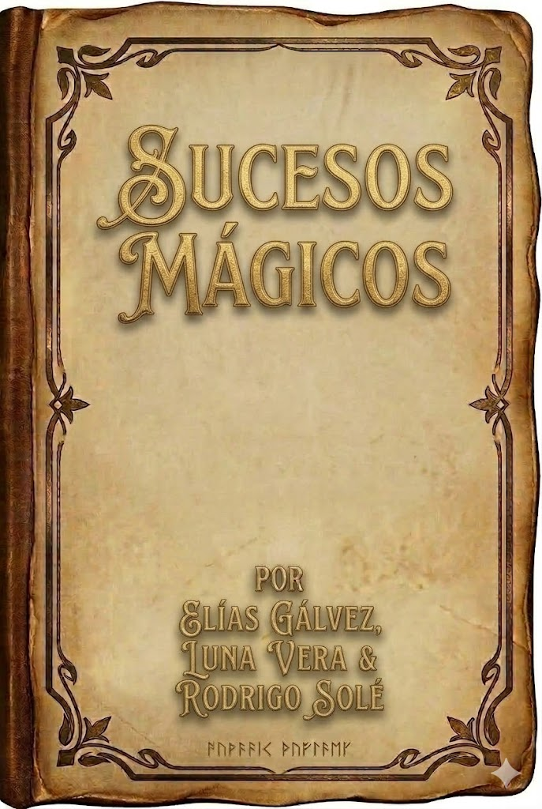
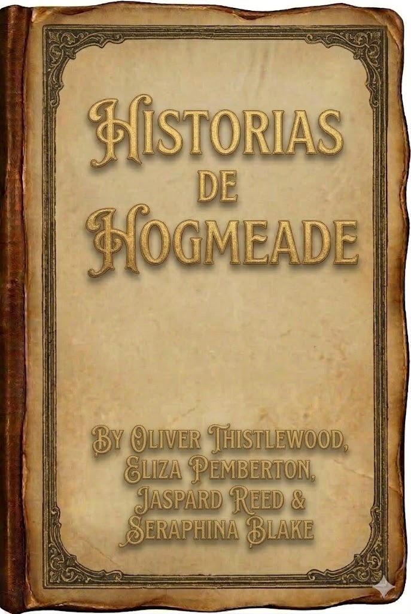
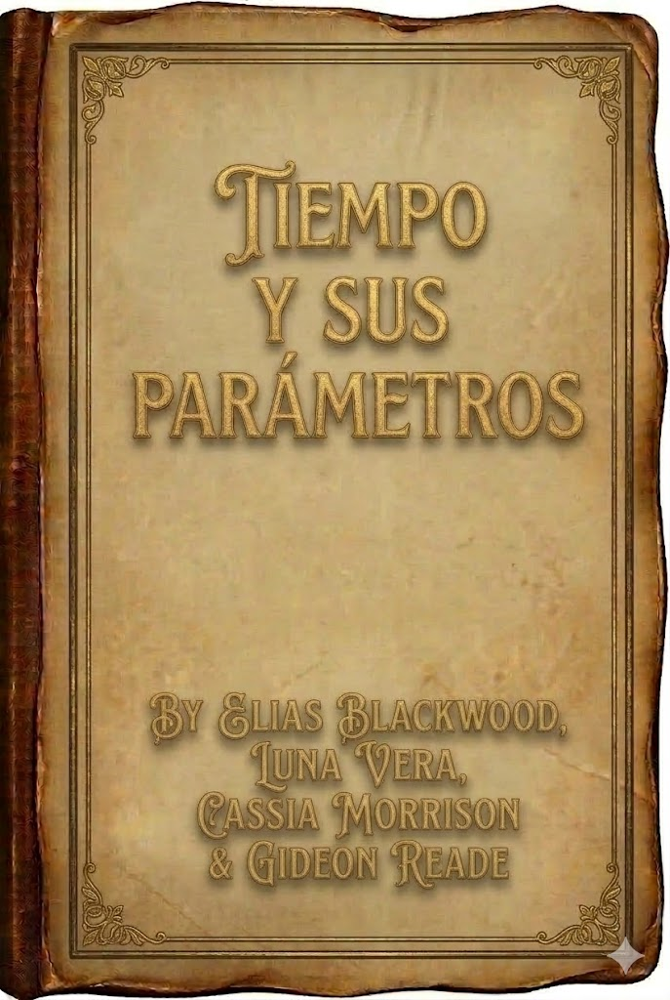
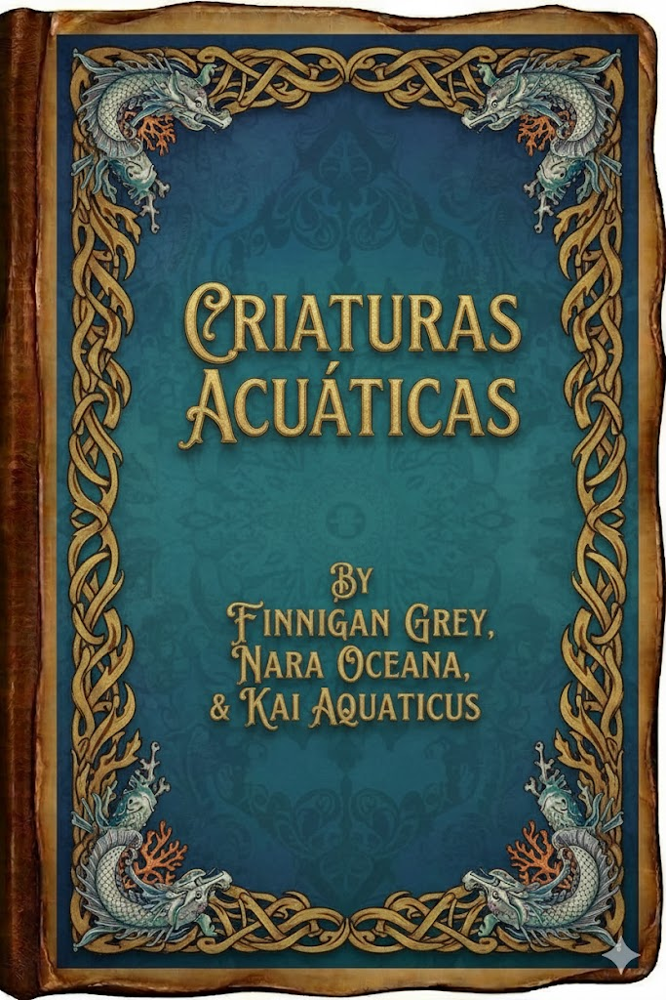
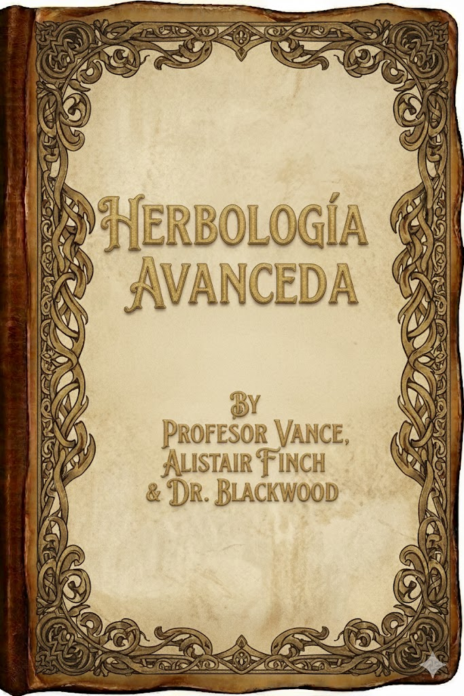

📚 Registros de Desapariciones
Selecciona un libro

Criaturas ancestrales

Criaturas mágicas

Herbología básica

Rompemaldiciones

Sucesos mágicos

Sucesos mágicos

Historias de Hogsmeade

Tiempo y sus parámetros

Criaturas acúaticas

Herbología avanzada
Alistair Crowley — Hace 7 años
Alistair de sexto curso, fue visto caminando hacia el Bosque Prohibido al anochecer.
Llevaba un libro de criaturas ancestrales.
Tres días después el libro apareció junto al lago.
Alistair nunca regresó.
Tomas Whitrow— Hace 6 años
El chico de quinto, nadaba en el lago cercano al castillo.
Saltó desde el embarcadero una tarde de verano.
Nunca volvió a salir del agua.
Algunos creen que fue culpa de un gryndilow.
Mabel Fawley — Hace 6 años
Mabel de segundo curso, fue a recolectar plantas al blosque.
Encontraron su túnica rasgada. Pero nunca su cuerpo.
Armand Vale — Hace 5 años
Armand era un profesor invitado especializado en maldiciones antiguas.
Tras su última clase, fue a atender un pedido en Hogsmeade.
A la mañana siguiente encontraron su equipage pero nunca lo encontraron a él.
Clarke Selwyn — Hace 5 años
Magizóologa que vino a dar una charla, por parte del ministerio.
Fue gusto antes de la clausura del castillo, sus compañeros afirmaban que había ido.
Nunca llegó a dar la charla, se cree que desapareció por la zona del castillo.
Rowan Pike — Hace 4 años
Rowan afirmó ver luces en las torres del castillo vacío.
Una noche subió a la colina para demostrarlo.
A la mañana siguiente solo encontraron su hacha.
Martha Bell — Hace 4 años
Martha dijo haber servido bebida a un viajero empapado que afirmaba venir del castillo.
El castillo llevaba meses cerrado.
Esa misma noche Martha desapareció.
Garrick Dunwell — Hace 3 años
Todos los relojes de la aldea se detenían a las 3:17 de la madrugada.
Garrick subió a la colina para averiguar por qué.
Los relojes volvieron a funcionar.
Garrick no.
Pella Grint — Hace 3 años
Pella decía escuchar voces que venían del castillo vacío.
Una madrugada siguió las voces.
Sus huellas desaparecieron en la nieve.
Miren Vale — Hace 2 años
Miren llegó a investigar las desapariciones.
Pasó semanas entrevistando a aldeanos.
La última frase de su cuaderno decía:
“Todo empezó dentro del castillo”.
Elia Thorn — Hace 2 años
Elia investigaba el castillo abandonado.
Fue vista caminando hacia la puerta principal.
Su varita fue encontrada en el suelo frente a la entrada.
Aún estaba caliente.